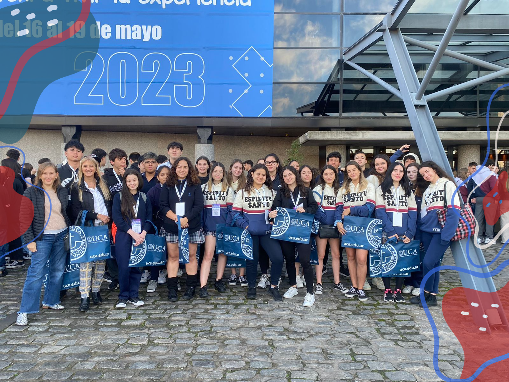

Visita a la UCA
Por: Victoria Camila Vallarino 5ºB
Los alumnos de los 5tos años visitaron la UCA para conocer la universidad y sus carreras.

Durante la jornada del día 17 de Mayo los alumnos de 5° año con la profesora Alejandra Paganini y la secretaria Verónica Jiménez visitaron la Universidad Católica Argentina para conocer un poco más de ésta.
En la entrada los alumnos recibieron un QR con todas las charlas disponibles, sobre las carreras o de orientación vocacional, mi primer trabajo, etc. y además la universidad dispuso de un desayuno para todos los visitantes.
Por la mañana los alumnos pudieron recorrer una parte de la universidad visitando stands de las carreras, participar de un sorteo e ingresar a las charlas de su mejor agrado.